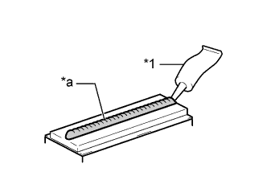

ROOF DRIP SIDE FINISH MOULDING > INSTALLATION |
| Item | Temperature |
| Vehicle Body | 40 to 60°C (104 to 140°F) |
| Roof Drip Side Finish Moulding Clip | 20 to 30°C (68 to 86°F) |
| 1. INSTALL ROOF DRIP SIDE FINISH MOULDING CLIP |
|  |
Apply a 2.0 to 3.0 mm (0.0787 to 0.118 in.) bead of adhesive (3M DP-105 or equivalent) to new roof drip side finish moulding clips.
| *1 | Adhesive |
| *a | 2.0 to 3.0 mm Bead of Adhesive |
Apply primer to the body where the roof drip side finish moulding clip will be installed.
While using the position shown in the illustration as a reference, place the roof drip side finish moulding clip onto the roof panel. Then position and install the clip after lightly pressing it so that the adhesive adheres to the primer.
| *A | for Front Side | *B | for Rear Side |
| Area | Measurement | Area | Measurement |
| a | 4.0 mm (0.157 in.) | b | 4.0 mm (0.157 in.) |
| c | 11 mm (0.433 in.) | d | 4.0 mm (0.157 in.) |
| e | 4.0 mm (0.157 in.) | f | 11 mm (0.433 in.) |
| 2. INSTALL ROOF DRIP SIDE FINISH MOULDING LH |
Attach the clip to install the roof drip side finish moulding.
| 3. INSTALL CENTER NO. 2 ROOF DRIP SIDE FINISH MOULDING LH (w/o Roof Rack) |
Install the center No. 2 roof drip side finish moulding.
| 4. INSTALL CENTER ROOF DRIP SIDE FINISH MOULDING LH (w/o Roof Rack) |
Install the center roof drip side finish moulding.
| 5. INSTALL REAR ROOF DRIP SIDE FINISH MOULDING LH |
Attach the clip to install the rear roof drip side finish moulding.
| 6. INSTALL ROOF DRIP SIDE FINISH MOULDING JOINT COVER LH (w/o Roof Rack) |
Attach the 2 clamps to install the roof drip side finish moulding joint cover.
| 7. INSTALL ROOF RACK ASSEMBLY LH (w/ Roof Rack) |
Install the roof rack (Click here).